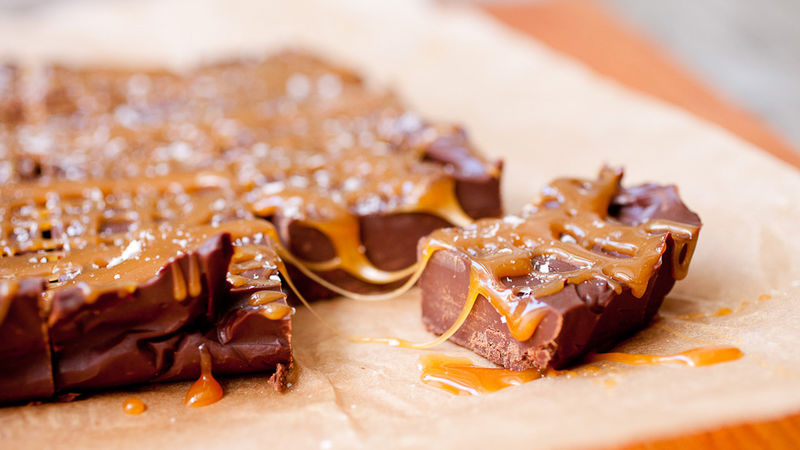
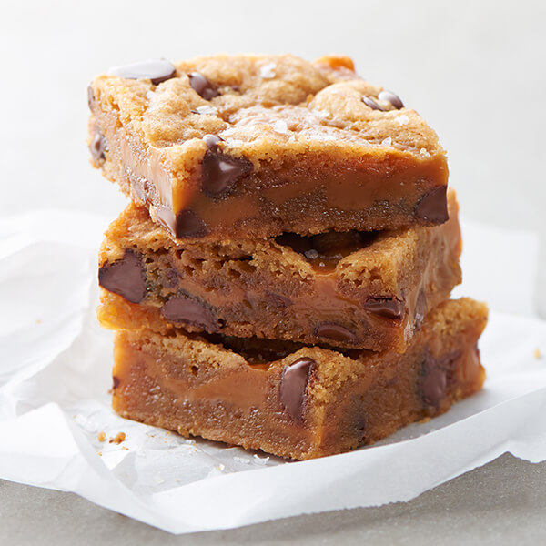

Salted Caramel
Salted caramel was invented in 1977
by the French pastry chef Henri Le Roux in Quiberon, Brittany, in the form of a salted butter caramel with crushed nuts
(caramel au beurre salé), using Breton demi-sel butter.

